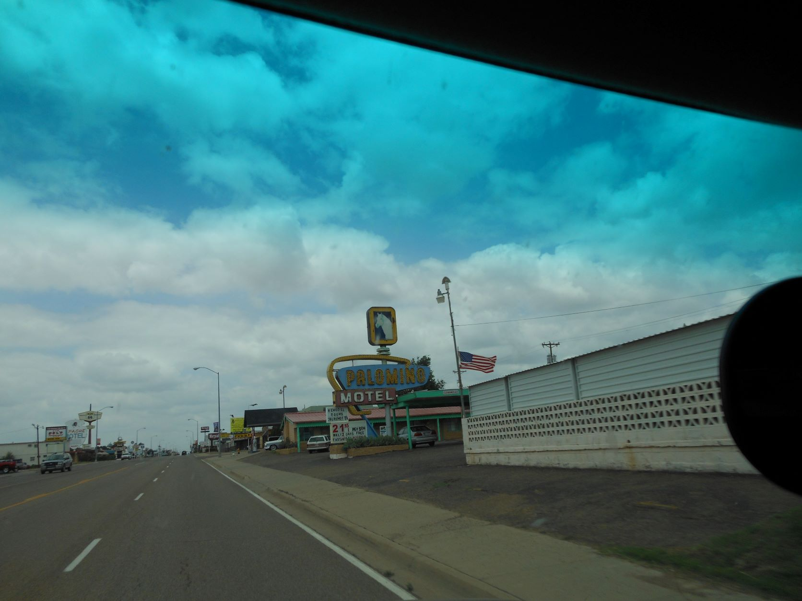
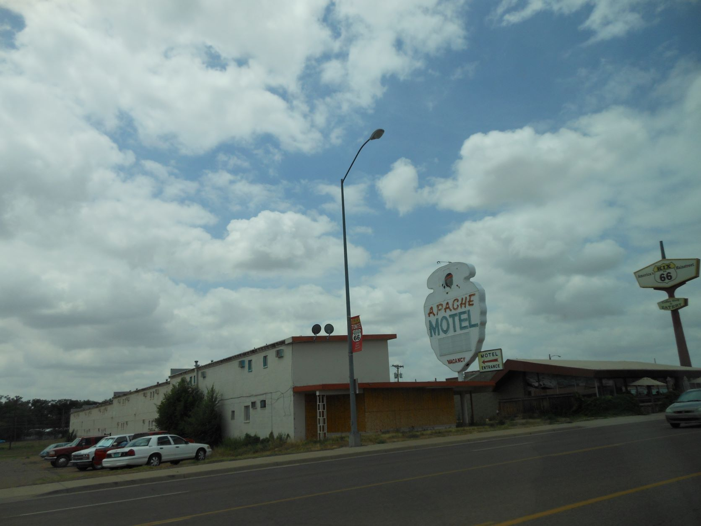
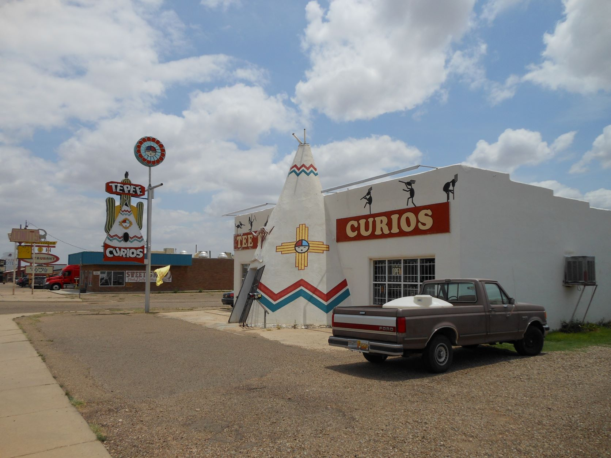
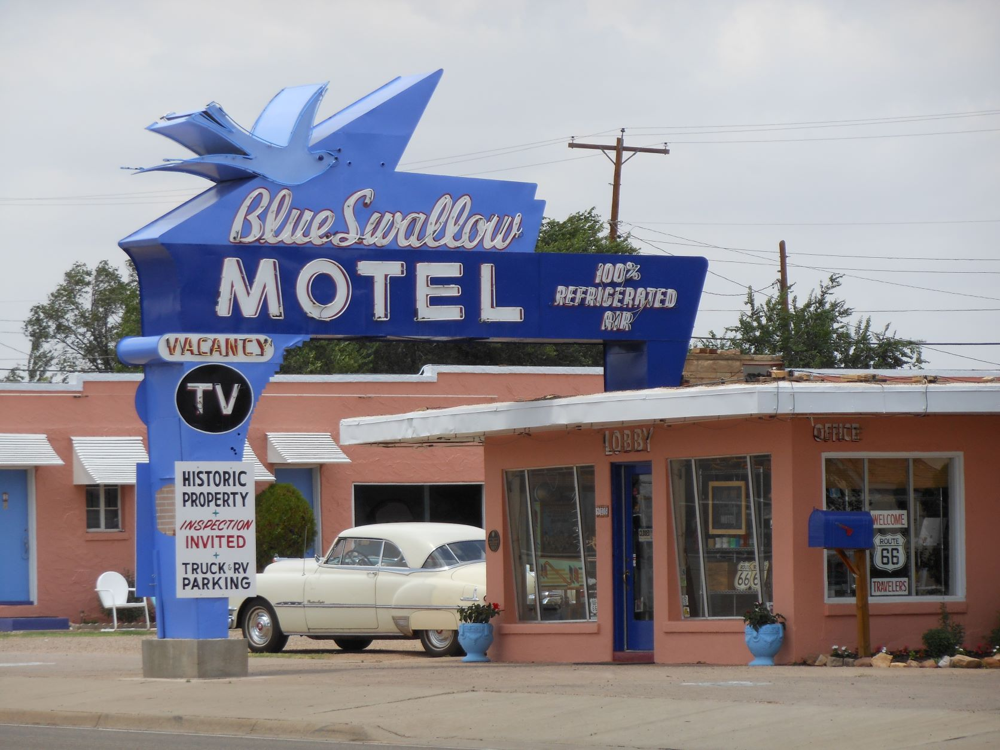
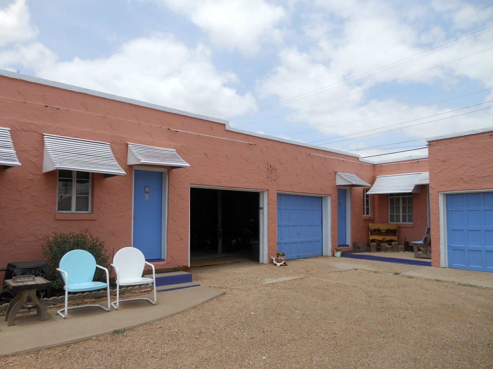
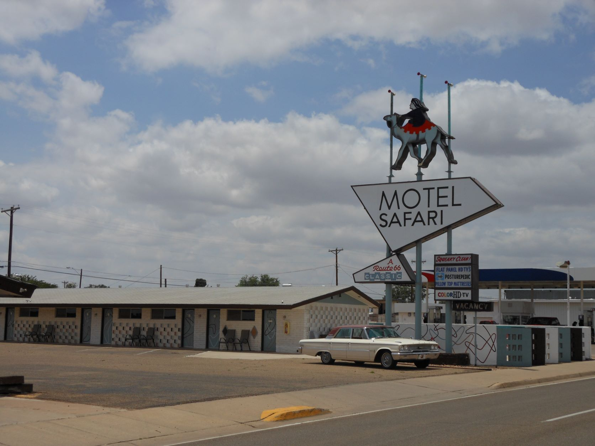
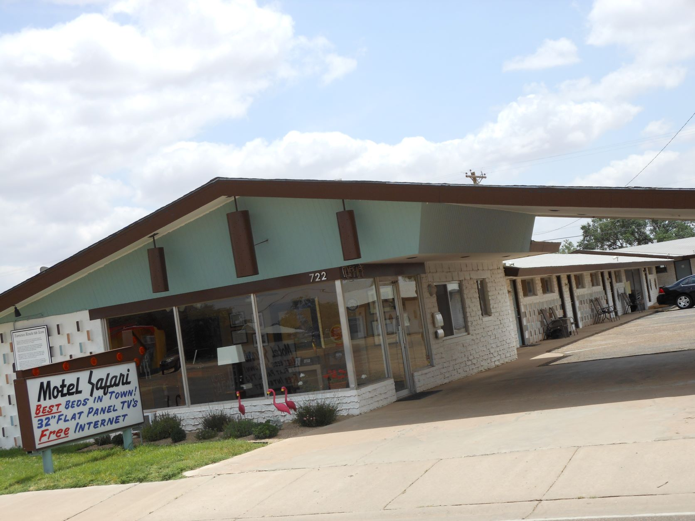
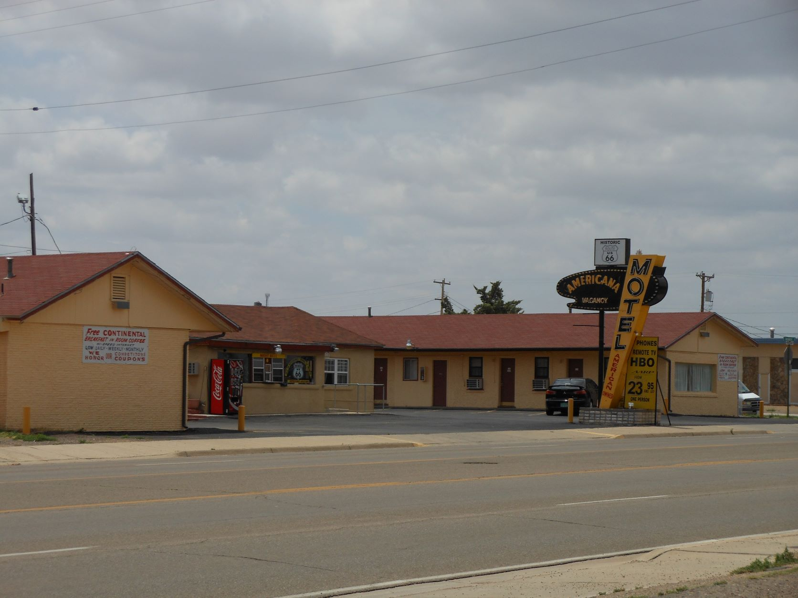

June 13, 2012 - Tucumcari, NM

Palamino Motel - Tucumcari, NM

Apache Motel - Now closed - Tucumcari, NM

Tee Pee Curios - Tucumcari, NM

Blue Swallow Motel - Tucumcari, NM

Blue Swallow Motel - Tucumcari, NM

Motel Safari - Tucumcari, NM

Motel Safari - Tucumcari, NM

American Motel - Tucumcari, NM